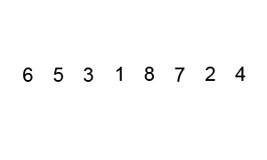

Quick sort is a highly efficient sorting algorithm and is based on partitioning of array of data into smaller arrays. A large array is partitioned into two arrays one of which holds values smaller than the specified value, say pivot, based on which the partition is made and another array holds values greater than the pivot value. Quicksort partitions an array and then calls itself recursively twice to sort the two resulting subarrays
Worst Case: O(n(logn))
Average Case: O(n(logn))
Best Case: O(n^2)